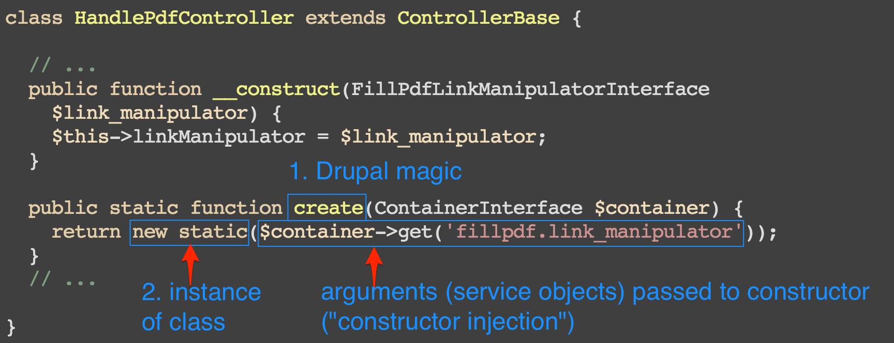
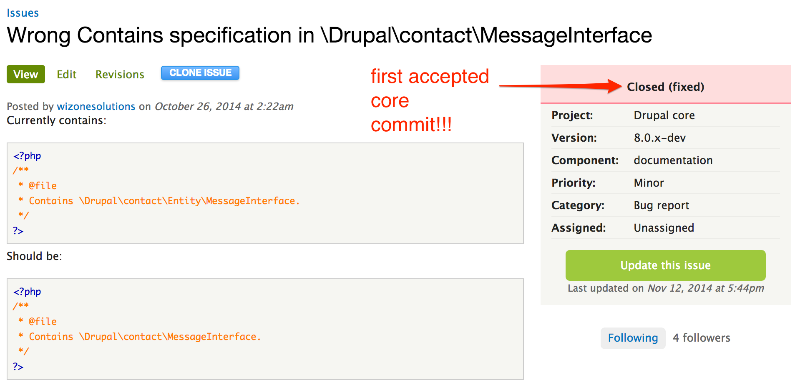

What was my experience?
(tl;dr: Not as bad as I expected.)
<insert learning curve image with people falling off that
@mortendk uses all the time here>
HOWEVER!
"However" what?
- D8 isn't actually that scary.
- It's the concepts you already know expressed in a different
way.
- I spent most of my time re-organizing things into the new
structure, but I was able to re-use a lot of logic and sometimes
even code.
- The very same @mortendk was forced to retire as the Angry
Themer. He's the Happy Themer now (session).
D8 is more consistent
- Patterns are used pretty consistently in core
- Your IDE will happily help you understand
- You have to define more things, so it's easier to find where
things are defined
- Some things still feel like magic, but it's magic the wider
Modern PHP community expects/understands I think
Now let me save you some time
#learnfrommyfail
- The
cake documentation page called "Converting
modules from 7.x to 8.x" is a lie. Don't bother with it.
- Start with Drupal Module Upgrader (DMU) instead! It will tell
you a lot of what you need to fix.
https://drupal.org/project/drupalmoduleupgrader
- There will be other things besides what it says. For that, look
at the change records:
https://drupal.org/list-changes
(filtered by changes introduced in 8.x). These tend to be
pretty well-written.
- Start with simple things like permissions. Move on to your
settings forms if there are any, then move on to more and more
complex stuff.
(Coder Upgrade is discontinued, by the way, but regular Coder
is still around.)
Biggest fails (stuff that confused me the most):
King Fail: Dependency Injection
What is this doing?
class HandlePdfController extends ControllerBase {
// ...
public function __construct(FillPdfLinkManipulatorInterface
$link_manipulator) {
$this->linkManipulator = $link_manipulator;
}
public static function create(ContainerInterface $container) {
return new static($container->get('fillpdf.link_manipulator'));
}
// ...
}
King Fail: Dependency Injection
What is this doing?

Side effects of module porting

:)
In summary
- Drupal 8 is not that scary
- Drupal is competitive again
- It's early enough that you can bug the smart people in #drupal-contribute with your questions :)
- Backdrop is...okay, but it won't be my choice